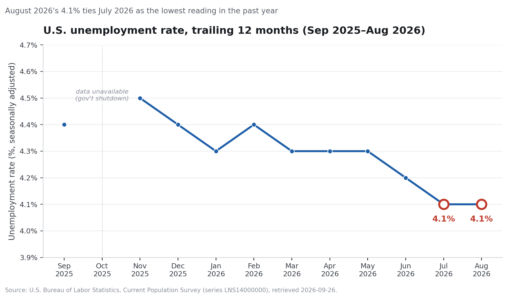

Fact check: "Unemployment at a one-year low of 4.1% through August 2026, payrolls +162,000"
Checked 2026-09-26 against U.S. Bureau of Labor Statistics primary data
TRUE
Both headline numbers match the BLS Employment Situation release for August 2026 (published Sept. 4, 2026), and the trailing-12-month record confirms 4.1% is in fact the lowest seasonally-adjusted unemployment rate the U.S. has posted in the past year — tied with July 2026, the only other month at that level.
What was checked
- Unemployment rate, Aug 2026
- 4.1% (seasonally adjusted) — confirmed against BLS series
LNS14000000
- Nonfarm payroll change, Aug 2026
- +162,000 — confirmed by differencing BLS series
CES0000000001 (159,075,000 in Aug vs. 158,913,000 in Jul = +162,000) and by the BLS narrative release
- "One-year low" claim
- Confirmed — 4.1% is the minimum monthly value in the trailing 12 months (Sep 2025–Aug 2026); it first reached 4.1% in July 2026 and held there in August
- Release date
- Friday, September 4, 2026 (BLS Employment Situation Summary)
Trailing 12-month unemployment rate

Trailing 12 months, unemployment rate detail
| Month | Rate | Note |
|---|
| Sep 2025 | 4.4% | |
| Oct 2025 | — | Not published — 2025 lapse in appropriations (government shutdown) |
| Nov 2025 | 4.5% | Highest in the window |
| Dec 2025 | 4.4% | |
| Jan 2026 | 4.3% | Revised for updated population controls |
| Feb 2026 | 4.4% | |
| Mar 2026 | 4.3% | |
| Apr 2026 | 4.3% | |
| May 2026 | 4.3% | |
| Jun 2026 | 4.2% | |
| Jul 2026 | 4.1% | Ties as trailing-12-month low |
| Aug 2026 | 4.1% | Ties as trailing-12-month low (headline month) |
For context, the rate was also 4.1% in June 2025 (14 months before August 2026), so 4.1% is not an all-time or multi-year low — only a trailing-12-month one, which is what the claim under review actually asserts.
Caveats and data-quality notes
Preliminary figure
Missing month in window
Cross-checked, 2 sources
- The August 2026 payroll and unemployment figures are preliminary. BLS's own establishment-survey data (series
CES0000000001) flags the August 2026 value with a "P" (preliminary) footnote; nonfarm payrolls are typically revised twice more (with the September and October reports) as more survey responses come in. The claim as stated matches the originally-published figure available as of this check (2026-09-26); it has not yet been revised.
- October 2025 unemployment data is missing from the official series due to the 2025 lapse in appropriations (government shutdown), so the "trailing 12 months" comparison here uses 11 actual observations plus the headline month, not a full unbroken 12-point series. This does not change the conclusion, since no plausible October 2025 value would have been below the confirmed 4.1% floor (the adjacent September and November readings were 4.4% and 4.5%).
- Revision context: the BLS release itself reports upward revisions to June 2026 (+11,000, to +31,000) and July 2026 (+44,000, to +21,000) payrolls — evidence the series is actively being revised and the August figure should be expected to move somewhat as well.
- No evidence found of a mid-window methodology break (e.g., a benchmark revision or seasonal-factor overhaul) that would make the Sep 2025–Aug 2026 comparison an apples-to-oranges one; BLS's annual benchmark revision for the establishment survey is normally published each February and was already reflected in the 2026 values pulled here.